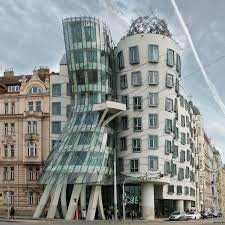
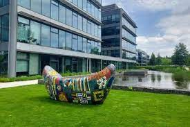
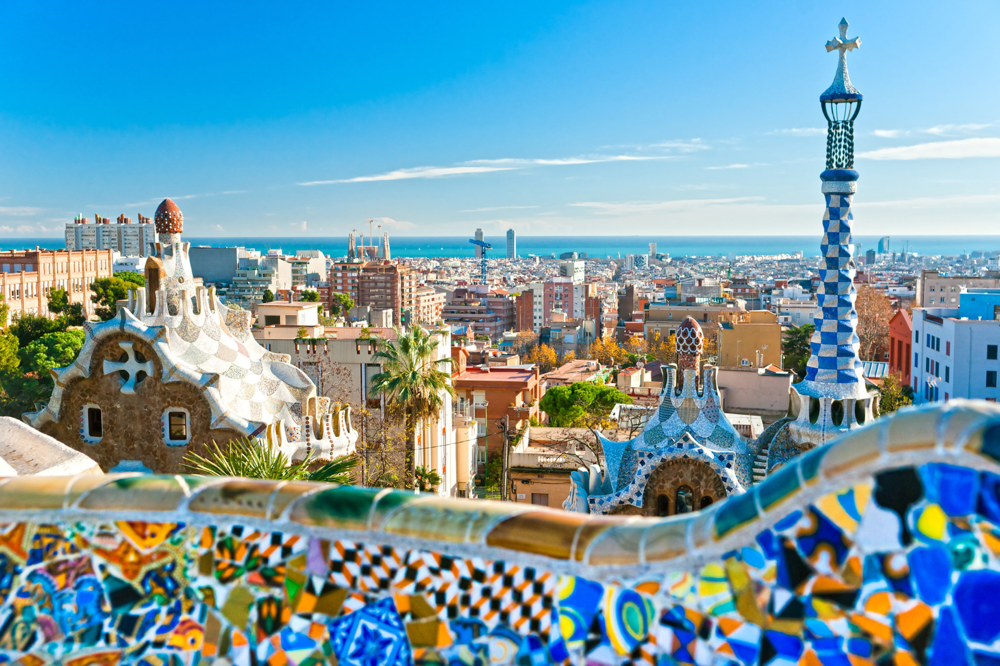
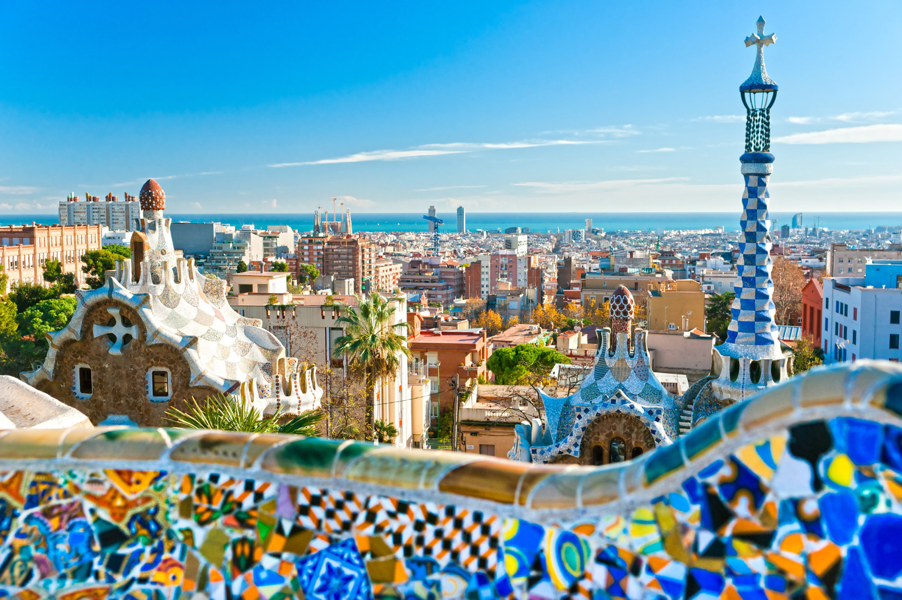

Travel
Grand Canyon


Geographical Location: North America
The Grand Canyon is a natural geological formation located in the state of Arizona. It is a steep-sided canyon carved by the Colorado River over millions of years. The canyon is known for its size, vibrant and varied colors, and intricate rock formations. It is one of the most famous and visited natural landmarks in the United States and around the world.
Though the Grand Canyon is one of the most iconic places to travel, there are many dangers that come from such a terrain. Between 2010 and 2020, 134 have died, mainly due to extreme heat. You can see below, examples of people getting hurt due to the heat and carelessness. A Canadian hiker has died at the Grand Canyon; reallifenewsandstories
Photo Gallery


Nanjing Fuzi-Qinhuai


Nanjing is a popular city full of Chinese history and old traditional southern kinds of agriculture. As a northern people from China, Nanjing was the first city that I traveled to the region south of the Yangtze River. Confucius Temple - Qinhuai River is the most famous place to show the beauty of Nanjing.
Confucius temple has many traditional temple agricultures inside and many small shops about traditional Nanjing specialties and popular restaurants. There are also many colorful traditional lanterns which made the night of qinhuai more gorgeous. People can also take the “Hua Fang” ( a special kind of ship) to travel around the river and the whole scenery.
Photo Gallery


Palo Alto

Geographical Location: North America
Palo Alto is a city located in the San Francisco Bay Area in California. Palo Alto was established in 1894 when Leland Stanford founded Stanford University. It is named after a costal redwood tree called El Palo Alto. It is home to many tech companies and startups, as well as Stanford University.
Palo Alto has two main commercial areas, University Ave and California Ave, both of which have delicious restaurants and stores. Many people come to Palo Alto to see Stanford, but there’s so much more to do. Palo Alto is home to many nature preserves such as Foothills Park and the Baylands, which are popular for hiking, walking, biking, and other outdoor activities.
Photo Gallery


Prague

Prague is the location of several University of Michigan Study Abroad programs. Many schools such as LSA, Ross, Engineering, and School of Information send students annually to Eastern Europe to explore an international education for their desired topic.
Prague is a country in central Europe. It is the capital of Czech Republic. It has a lot of historical features and buildings. It is a beautiful city with a ton of architecture. Prague is a very popular destination spot for tourists.
Photo Gallery

Picture of Prague statues and skyline at sunset
Image of famous Prague dancing house landmark

Image of decorations from Prague market
Image of sculpture in Prague

Image of Prague clock, lonely planet, landmark
Barcelona, Spain

Barcelona is located on the northeastern coast of Spain and is the capital of Catalonia. Barcelona is home to 1.6 million people and contains multiple different historical landmarks and interesting architecture.
Barcelona is famous for its notable architects including Antoni Gaudí and Lluís Domènech i Montaner. These architects built La Sagrada Familia, Park Guell, and Palau de la Música Catalana which are among the most famous constructions in Barcelona. Both architects are famous for their Modernisme style buildings notable for their distinct colors and organic shapes.
Photo Gallery
 
